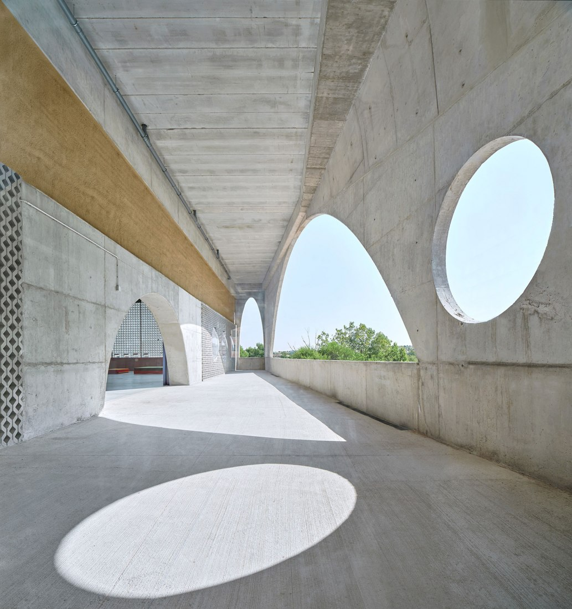
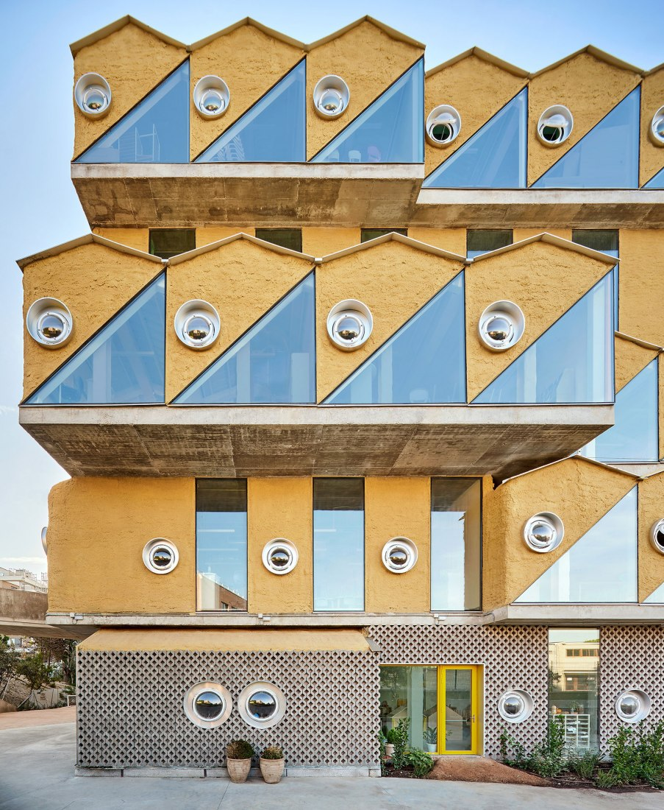

Andrés Jaque liderliğindeki Office for Political Innovation (OFFPOLINN), Madrid’in kuzeyinde, başkentin en seçkin bölgelerinden biri olan Moraleja bölgesini çevreleyen Encinar de los Reyes semtinde, Reggio School adında farklı bir eğitim yapısı tasarlamış.
Projenin çıkış noktası, farklı öğrencilerin keşfetme ve eğitim isteklerini artıracak bir mimari alan inşa etmek olmuş. Güçlü bir çocuk imajı, çok rollü öğretmen, zengin ve eğitici bir çevre, güçlü ilişkiler, proje tabanlı öğrenme gibi prensipler benimseyen Reggio Emilia yaklaşımında eğitim verecek olan okul için Andrés Jaque tarafından önerilen tasarım, öğrencilerin eğitim düzeyine göre üst üste dizilmiş bir dizi parçadan oluşuyor.
Okulun inşaatında, sürdürülebilir çözümlerin uygulanmasından vazgeçmeden, düşük bütçeli bir strateji izlenmiş. Yapının girişi alt sınıflara giden öğrenciler için sınıfların yerleştirildiği arazi ile bağlantılı bir zemin katıyla başlayacak şekilde planlanmış.
Üst katlarda su-toprak depoları ile sera-bahçe yanında orta sınıf öğrenciler; iç bahçe etrafında şekillenen ikinci katta ise daha üst sınıf öğrenciler için alanlar tasarlanmış. Bu kat dağılımı, öğrencilerin okul ekosistemini kendi başlarına ve akranlarıyla birlikte keşfetme kapasitelerinin artması için planlanmış.
Peyzaj ölçeğindeki kemerlerle çevresindeki ekosistemlere açılan büyük bir boşluk olarak biçimlendirilen ikinci kat, okulun ana sosyal meydanı olarak tasarlanmış. Buradaki mimari, öğretmenleri ve öğrencileri okul yönetimine katılmaya, çevredeki manzaralar ve bölgelerle etkileşime girmeye teşvik edecek şekilde inşa edilmiş. Bu 464 metrekarelik ve 8 metre yüksekliğe sahip merkezi alan, kozmopolit bir agora olarak tasarlanmış.
Ekolojist ve toprak bilimcilerinden oluşan bir ekip, özellikle böcek, kelebek, kuş ve yarasa topluluklarını barındırmak ve beslemek için küçük bahçeler tasarlamış. Bu bahçe; egzersiz yapmak gibi sıradan etkinliklerin yanı sıra, okulun bir topluluk olarak nasıl yürütüldüğü ve komşu alanlarla nasıl ilişki kurulabileceği hakkındaki konuşmaların yapılabileceği bir alan olarak hayata geçirilmiş.
Mimarinin genelde mekanik sistemleri gizlemeye yönelik çabalarına bir alternatif olarak bu yapıda tüm hizmetler görünür tutulmuş, böylece binayı aktif tutan sistemlerin öğrenciler tarafından algılanır olması sağlanmış. Binada boruların, kanalların, tellerin ve ızgaraların da malzeme ekosisteminin görsel bir parçası olmasına izin verilmiş.
Okul tasarımlarının %90’ında olduğu gibi, yatay olarak genişleyen bir yapı yerine karbon ayak izini en aza indirebilmek için dikey bir mimari tercih edilmiş. Ofis binanın inşaatında giydirme, asma tavan, yükseltilmiş teknik döşeme, duvar kaplaması, havalandırmalı cephe kullanmamış. Binanın cephelerinde, çatılarında ve iç bölmelerinde kullanılan malzemelerinin büyük bir bölümü, ısı yalıtımı ve mekanik sistem dağıtımı gibi basit stratejilerle değiştirilerek %48 oranında enerji tasarrufu sağlanmış.
Ofis tarafından bu proje için özel olarak geliştirilen en doğal çözüm olan mantar sarma ile ısı izolasyonu sağlanmış. Bina cephesinin %80’i mantarla kaplanarak, Madrid yönetmeliklerinin gerektirdiğinin iki katı ısı yalıtımı sağlanmış ve okulun ısıtılması sırasında tüketilen enerji pasif olarak %50 oranında azaltılmış. Ayrıca mantar dokusunun düzensiz yüzeyi, organik malzemenin birikmesine izin verecek şekilde tasarlanmış, böylece binanın kabuğunun ilerleyen yıllarda çok sayıda mikrobiyolojik mantar, bitki ve hayvan için yaşam alanı haline gelmesi planlanmış.